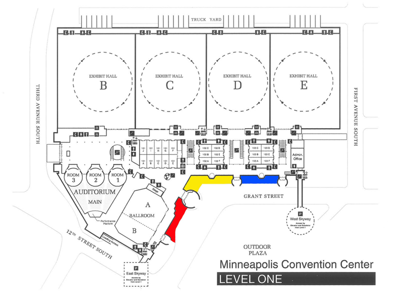

<%method title>Bus Parking and Pick Up
at Mpls Convention Center for Physics Force 2013
- All buses must drop off students at the front of the Convention Center on 2nd Ave.
- Buses should proceed to 1st Ave for staging instructions.
All drivers must stay with buses until final staging is complete.
- Following the show buses will be at the front of the Convention Center as directed and await students in a particular zone. The loading zone areas will be identified by colored banners of red, blue and gold.
Your school name and loading zone color will be announced in the auditorium when your bus is ready to load.
- Please try to remain seated until your bus has been announced.
You must have a large placard in the front window of your bus identifying your school name.
Please make one for your vehicle or we cannot help you find your bus.
Teachers and drivers should exchange contact information before the show.- If a different bus will be picking you up after the show please instruct them to pull into the First Avenue staging area with school name clearly displayed . The driver will be instructed when to enter the loading zone.
See map below.
